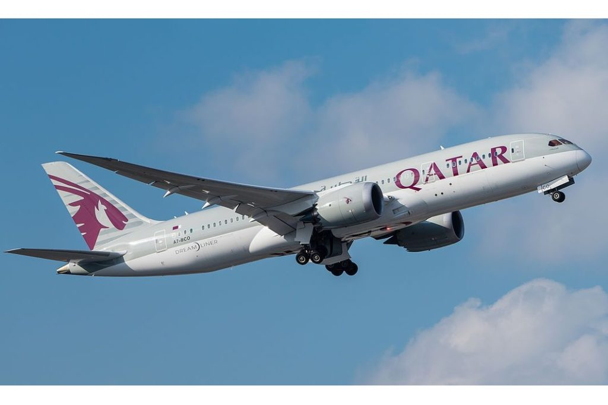

ROTEIRO DE VIAGEM PARA CATAR
Catar, ou Qatar, é um país localizado na Ásia Ocidental, na Península Arábica (península é uma extensão de terra cercada por água em quase todos os lados), e estende-se até o norte do Golfo Pérsico. O país é considerado um emirado, tendo seu território administrado por um membro da classe dominante, no caso um emir. É uma das nações mais ricas do mundo. É um país que as pessoas visitam por conta de fazer escala, mas o Catar pretende mudar isso! Eles querem que os visitantes venham para uma visão turística, também querem ser reconhecidos como um país rico em cultura e eventos esportivos, tanto que em 2017 sediaram mais de 80 eventos de esporte. O Catar está em transformação, a maioria dos prédios que formam o skyline foram construídos nos últimos 10 anos. O país entregará cerca de 140 km de estádios, shoppings, vias públicas e passarelas para a Copa do Mundo, que será sediada esse ano, em 2022. Porém mesmo antes da Copa do Mundo, há diversas coisas para ver e descobrir!
Temporada de viagem
Os países localizados no golfo pérsico no geral têm um verão que chega a ser insuportável com temperaturas acima dos 40/45 graus durante o dia. Por conta disso os meses próximos do inverno e o inverno são as melhores épocas para visitar o Catar. Alta temporada: Dura de outubro a abril e é quando a temperatura do país é mais amena, apesar de ser inverno só quer dizer que está menos quente. É uma das melhores épocas, com dias não tão quentes e noites frescas. Média temporada: É setembro e maio e não beira o insuportável, mas é bastante quente e pode atrapalhar andar durante o dia pelas ruas do país. Baixa temporada: São os meses de junho, julho e agosto, podem até ir visitar, é tudo mais barato, quase não se vê turistas, as temperaturas chegam a tingir 45 graus quase que diariamente, passear pelas ruas se torna quase impossível. Uma pergunta que fazem, dá para aguentar verão no Catar? Alguns acham que é exagero quando as pessoas falam sobre o verão no Catar. Mas lá é realmente muito quente, moradores dizem que muitas vezes não dá nem pra levar o lixo para fora de casa de tão quente!
É seguro viajar para Catar?
No geral, Catar é um país com baixa criminalidade especialmente relacionados a estrangeiros. Contudo, como qualquer outra cultura, existem regras que devem ser cumpridas para uma melhor experiência no local. Lembre-se: Catar é um país muçulmano, sendo esta a religião que norteia a maior parte da população. Costumes locais não devem ser desrespeitados e devem ser seguidos à risca. Mulheres devem seguir o código de vestimenta (isto é: roupas que cubram ombros e joelhos) e a homossexualidade é ilegal no país e, no geral, demonstrações de afeto em público não são bem vistas. Pequenos roubos existem, mas não são uma grande preocupação ou algo totalmente fora do comum. A maior recomendação é evitar usar caixas eletrônicos no exterior para prevenir possíveis fraudes de cartões de crédito. Além disso, optar por transitar em áreas conhecidas e também movimentadas por turistas é um bom meio de não ser uma vítima de furtos.
Culinária
A culinária é fortemente influenciada pela cultura beduína tradicional influência da Índia. Um dos maiores pratos típicos de Catar é a Saloona, uma sopa de carne com legumes, considerada muito nutritiva e agrada a todos os paladares. Os principais pratos de Catar são Majboos, Madrouba, Kousa mahshi, Luqaimat e Khafaroosh sendo muitos elogiados por estrangeiros. O país também é muito conhecido pelo Khunafa, um doce típico da região e pelas famosas tâmaras.
Documentos importantes
Para conseguir ir para o Catar é necessário que tenha um passaporte válido por mais de seis meses e ainda tenha folhas em branco, os brasileiros não precisam de visto para entrar no país e podendo ficar até 90 dias, mas, precisam ter um comprovante que prove sua renda suficiente para o tempo de permanência, ter uma passagem de ida e volta, carteira de vacinação contra o Covid19 e importante ter um seguro viagem, porque sem ela, você pode ser barrado na imigração. E em alguns casos as reservas de hospedagens podem ser solicitadas
Transporte
Com os holofotes voltados ao Catar, o pequeno país do Oriente Médio receberá o evento de futebol mais importante do mundo em 2022. Em razão de sua breve extensão territorial é muito simples se deslocar para qualquer lugar escolhido, especialmente em Doha, sua capital. Contando com o transporte aéreo, a distância, em linha reta, por exemplo, entre Catar e Brasil é cerca de 12 mil km. Há algumas opções de voos direitos saindo de São Paulo para a capital, em que a viagem dura mais ou menos 14 horas e pode custar de R$ 4 mil a R$ 14 mil por trecho, dependendo de fatores como a proximidade da data ou a classe escolhida. Contudo, segundo anunciado pelo Ministério do Turismo, os brasileiros também contarão com um voo direto partindo do Rio de Janeiro. Opções como alugar um carro permite mais independência ao viajante. No país, existem várias locadoras, que podem ser encontradas especialmente no aeroporto internacional de Doha ou reservadas através de seu agente de viagem. Inaugurado em 2019, o metrô de Doha é rápido, eficiente e ótimo para turistas com um orçamento limitado. Conhecido por ser moderno e prático, ele é constituído por 4 linhas, que contemplam diversos pontos importantes do destino, incluindo mais de 300 km e 100 estações. Ademais, os táxis são excelentes artifícios para curtas distâncias ou até mesmo executar trajetos para cidades vizinhas. Estes, como os táxis Karwa, são encontrados geralmente próximos ao aeroporto, hotéis e shopping centers, além dos que operam por aplicativo, como o Uber e Careem. Similarmente o serviço de limusine com motorista no Catar é mais caro do que pegar um táxi, todavia é ideal para viajantes que preferem a conveniência de ter um motorista durante as férias. Por outro lado, há uma rede de ônibus bastante extensa, cobrindo todos os cantos de Doha, bem como o resto do Catar. Essa escolha relativamente mais “simples” oferece ar-condicionado, sistema equipado e operação diária entre 5h e meia-noite, com horários reduzidos aos finais de semana
Curiosidades
É considerado final de semana na sexta e no sábado. No domingo é considerado dia útil e as crianças vão pra escola com tudo funcionando normalmente. Sexta-feira em Catar é considerado um dia sagrado e todas as mesquitas estão cheias, principalmente na reza do meio dia. Todos os museus de Catar são gratuitos para o povo de Catar e para os turistas que visitam o país, exceto o museu do Sheik Faisal. Durante a sexta-feira em Catar os horários das principais atrações podem sofrer alterações. Além disso, se você ver uma casa cheia de luzinhas de Natal, é um sinal de que uma noiva está prestes a casar. Quando você for visitar Catar provavelmente irá acordar com a chamada da reza que acontece 5 vezes ao dia. Para as mulheres, em lugares públicos é proibido andar com os ombros, colo e joelho descoberto. As mulheres estrangeiras não são obrigadas a usar abaya, só é obrigatório usar quando ela for entrar em uma mesquita. Se um árabe te oferecer um café nunca diga não, a maneira mais educada de recusar é balançando a xícara.
Mais informações úteis
- Capital: Doha
- Moeda: Qatari rial
- Idioma: Árabe
- População: 2,8 milhões
- Requer Visto: Não
- Requer Vacinas: Não
- Eletricidade: 220v
- IDH: 0,856 (33º)